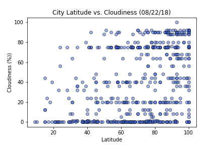

Summary: Latitude vs. X

The objective of this project was to determine how four factors (maximum temperature, humidity, windspeed, and cloudiness) are affected getting closer to the equator. The data was sourced from the OpenWeatherMap API to create a dataset on over 500 cities.
Matplotlib was used to plot these dependent variables with respect to latitude, the independent variable. The site provides the source data, the associated visualizations resulting from plotting the data, in addition to brief descriptions of material trends and/or correlations observed.